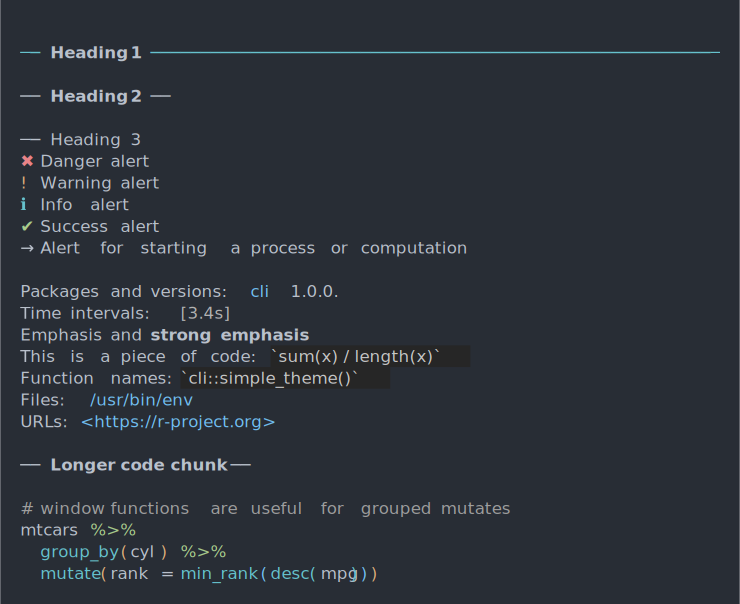

| builtin_theme {cli} | R Documentation |
This theme is always active, and it is at the bottom of the theme stack. See themes.
builtin_theme(dark = getOption("cli_theme_dark", "auto"))
dark |
Whether to use a dark theme. The |
A named list, a CLI theme.
cli_h1("Heading 1")
cli_h2("Heading 2")
cli_h3("Heading 3")
cli_par()
cli_alert_danger("Danger alert")
cli_alert_warning("Warning alert")
cli_alert_info("Info alert")
cli_alert_success("Success alert")
cli_alert("Alert for starting a process or computation",
class = "alert-start")
cli_end()
cli_text("Packages and versions: {.pkg cli} {.version 1.0.0}.")
cli_text("Time intervals: {.timestamp 3.4s}")
cli_text("{.emph Emphasis} and {.strong strong emphasis}")
cli_text("This is a piece of code: {.code sum(x) / length(x)}")
cli_text("Function names: {.fn cli::simple_theme}")
cli_text("Files: {.file /usr/bin/env}")
cli_text("URLs: {.url https://r-project.org}")
cli_h2("Longer code chunk")
cli_par(class = "code R")
cli_verbatim(
'# window functions are useful for grouped mutates',
'mtcars %>%',
' group_by(cyl) %>%',
' mutate(rank = min_rank(desc(mpg)))')
